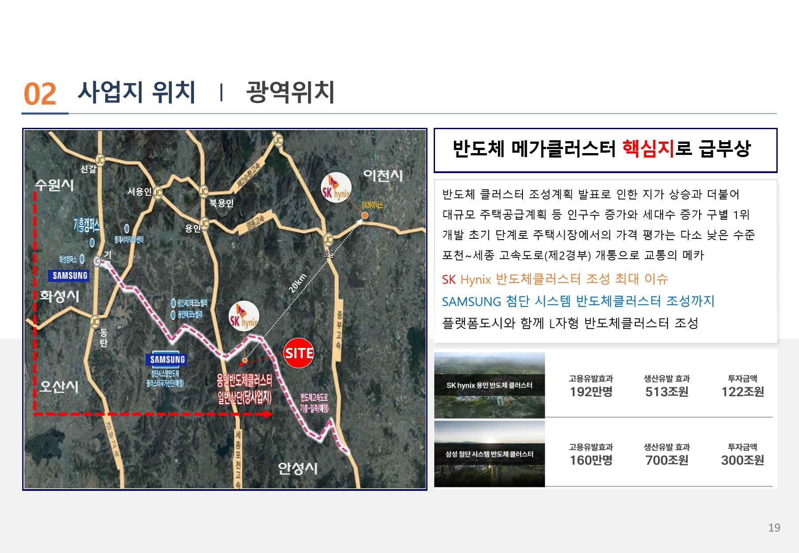
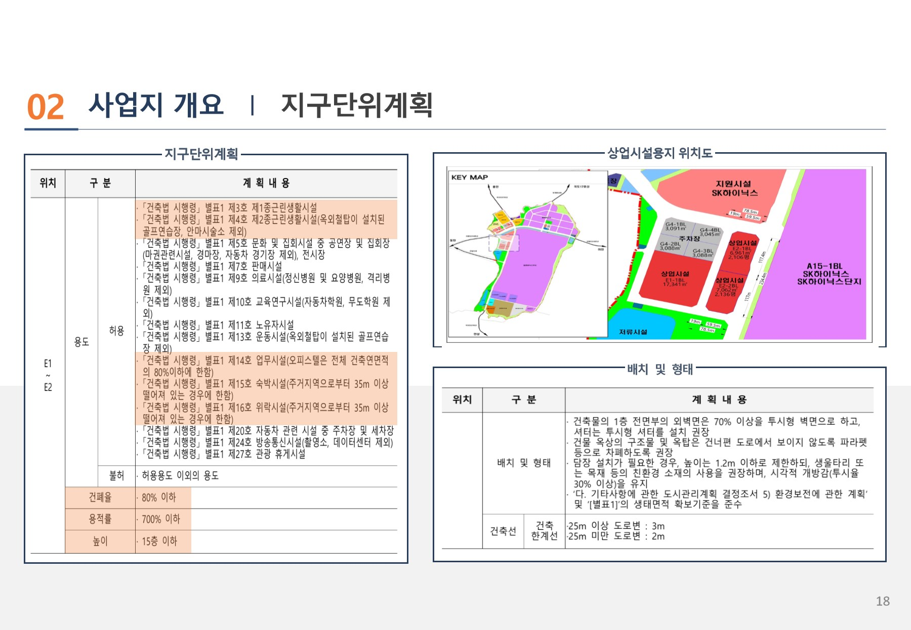
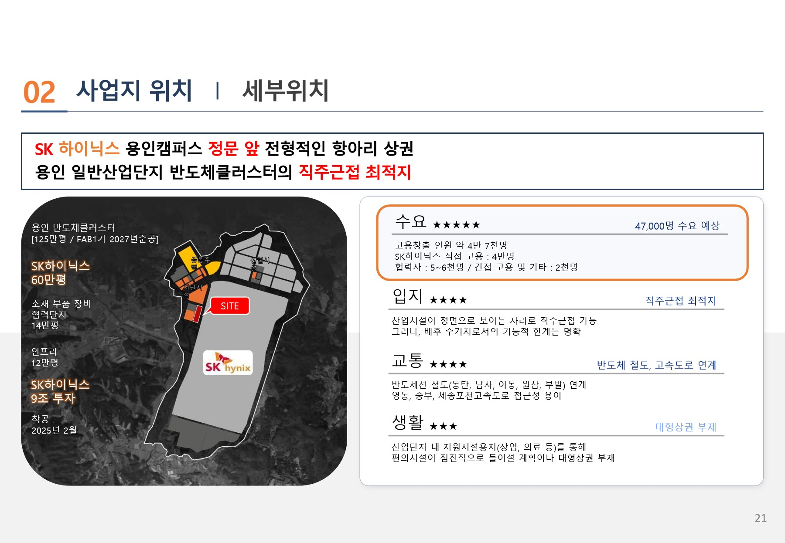
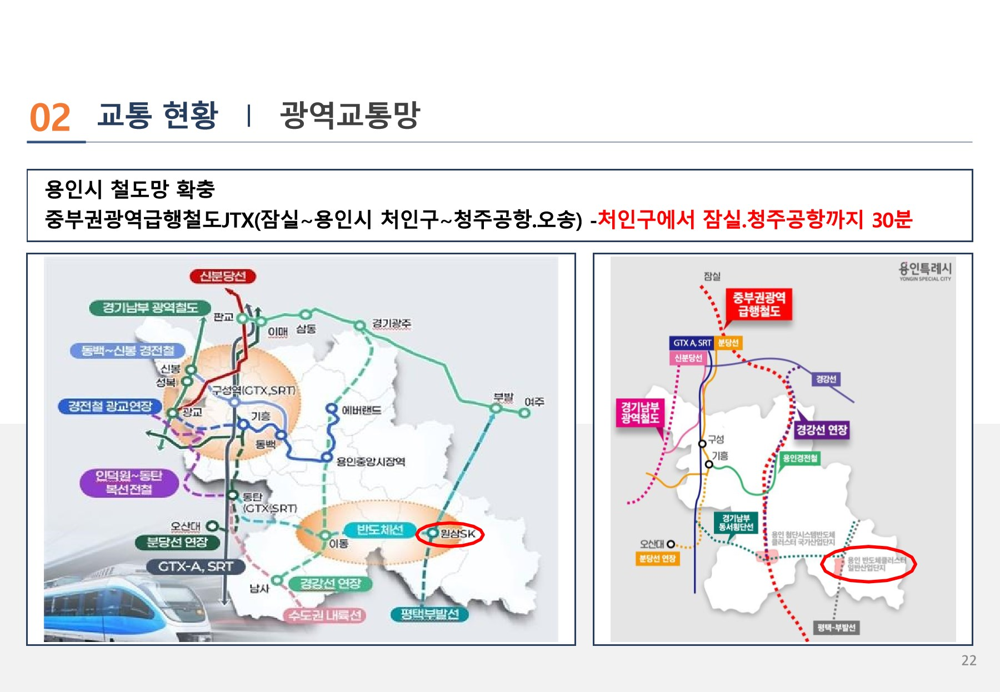
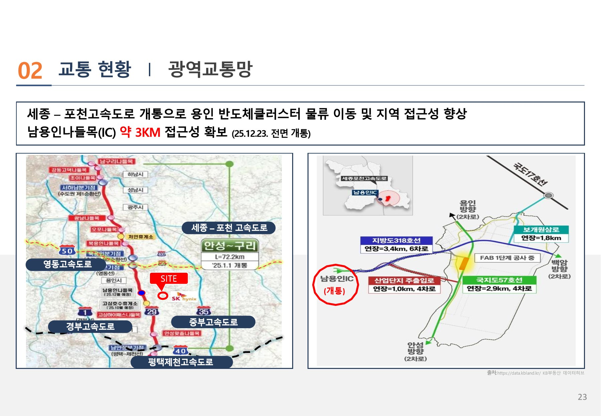

광역 위치도
용인·이천·동탄·기흥을 잇는 반도체 메가클러스터 안에서 원삼 일반산업단지의 광역 위치를 확인하는 사업계획서 기준 자료입니다.

사업계획서 기준 입지자료를 바탕으로 용인 반도체클러스터, 산업단지 접근성, E2-1 BL의 위치 관계를 정리한 참고 리포트입니다.
용인·이천·동탄·기흥을 잇는 반도체 메가클러스터 안에서 원삼 일반산업단지의 광역 위치를 확인하는 사업계획서 기준 자료입니다.

용인 반도체클러스터 일반산업단지 지구단위계획과 E2-1·E2-2 상업시설용지 위치를 확인하는 사업계획서 기준 자료입니다.

SK하이닉스 용인캠퍼스 정문 앞 입지 조건과 수요·입지·교통·생활 항목별 검토 내용을 정리한 사업계획서 기준 자료입니다.

중부권광역급행철도(JTX), 반도체선 등 용인시 철도망 확충 계획을 기준으로 접근성을 검토합니다.

세종-포천고속도로 개통과 남용인IC 접근성을 기준으로 산업단지 진입 동선을 검토합니다.

※ FAB·기숙사·E2-1 관계도는 현재 확보된 사업계획서 발췌자료에 포함되어 있지 않아 게재하지 않았습니다. 확정 자료가 확보되는 대로 반영합니다.
산업단지 전체 상업용지비율 약 0.75%, 당 사업지 E2-1·E2-2 비율 약 0.34%를 기준으로 타 산업단지·택지지구 대비 낮은 상업용지 비율과 근린생활시설 배후수요를 검토합니다.
전체 산업단지 내 상업용지비율 참고값
당 사업지 관련 상업용지 비율 참고값
근린생활시설 배후수요 검토용 참고자료
근린시설 시세는 상담 시 최신 자료 기준으로 확인